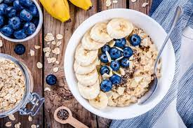

♥ Avena ♥

Avena with Miscellaneous Fruits
Oatmeal is a good breakfast option. You can also make oatmeal overnight via soaked oats.
This is just the most basic method of oat preparation.
Ingredientes
- Organic oats
- Aceite de coco
- Clean water
- That's it!
Pasito a Pasito
- Find a good (clean) cast iron and light the stove.
- Scoop in some aceite de coco, spread it around.
- Ponga la avena en la sartén.
- Espera quizas siete minutos, o algo así.
- Disfruta !